Maréchalerie itinérante
La Yaute Maréchalerie
Parage de chevaux, ânes et mulets
Haute-Savoie · Savoie · Ain
Le savoir-faire au service des sabots de vos équidés
Découvrir les prestations- Savoir-faire et expérience
- Respect de l’animal
- Intervention à domicile